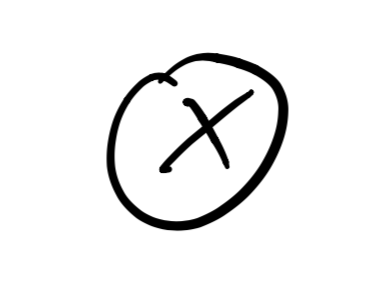
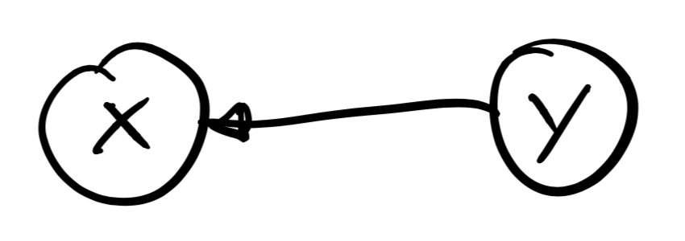
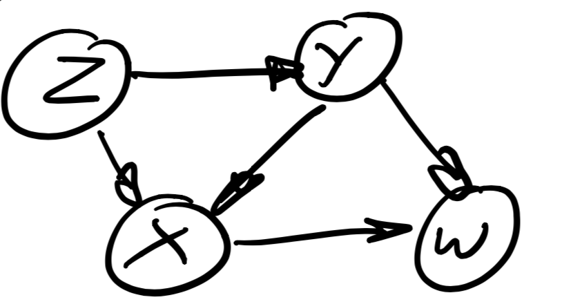
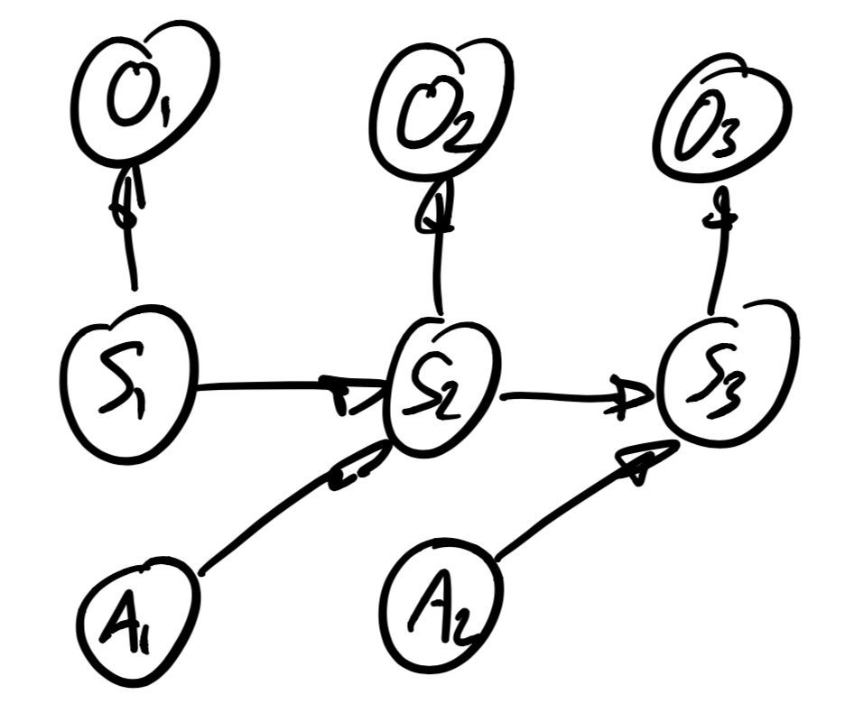

---
redirect_from:
  - "/01/1-bayes-nets"
title: |-
  Probability and Bayes Nets
prev_page:
  url: /01/Planning.html
  title: |-
    Planning
next_page:
  url: /02/DiffDrive.html
  title: |-
    A DiffDrive Robot
suffix: .md

comment: "***PROGRAMMATICALLY GENERATED, DO NOT EDIT. SEE ORIGINAL FILES IN /content***"
---

    <main class="jupyter-page">
    <div class="jb_cell">

<div class="cell border-box-sizing text_cell rendered"><div class="inner_cell">
<div class="text_cell_render border-box-sizing rendered_html">
<h1 id="Probability-and-Bayes-Nets">Probability and Bayes Nets<a class="anchor-link" href="#Probability-and-Bayes-Nets"> </a></h1><h2 id="Motivation-{#motivation-.unnumbered}">Motivation {#motivation .unnumbered}<a class="anchor-link" href="#Motivation-{#motivation-.unnumbered}"> </a></h2><p>Bayes nets give us a way to simulate robots. We will view simulation as drawing samples from a structured probability distribution. The probability distribution can be viewed as a stochastic world model, by describing how sensors reflect state, and how actions affect the state.</p>
<p>Our running example will be a robot that exists on a plane, and we will describe the robot's location with the 2D coordinate of a 10 by 10 grid that discretizes the space. The robot has a sensor to figure out where it is, and it's action space is limited to moving left, right, up, or down in the grid.</p>
<p>The random variables we use below can also be used to describe the state of a real robot, and the data structures we build below can be used to control and plan for a real robot. The discrete and coarse nature of our representation will manifest itself in being able to make only probabilistic statements about the robot's state, which is called inference. In this section we will do some of that, but will mostly be content with the modeling part.</p>
<p>Below we take a <strong>Bayesian view of probability</strong>, rather than a frequentist one. This means that we see probabilities as describing our knowledge about events, rather than tallying up frequencies by which they occur. Think of the weather-person talking about the probability of rain tomorrow. Probabilities viewed this way can be used to describe <strong>prior knowledge</strong> about the state of the world, how sensors work, and how actions affect the state of an agent and the world.</p>
<p>As we introduce concepts below, we will also introduce a graphical way to represent these concepts, and as such gradually develop the general notion of a Bayes net, which is a graphical model to describe complex probability distributions.</p>
<h2 id="Discrete-Distributions">Discrete Distributions<a class="anchor-link" href="#Discrete-Distributions"> </a></h2><p></p>
<p>A <strong>discrete probability distribution</strong> is the probability distribution of a random variable $X$, taking on one of $K$ discrete values. For example, we can model the action space of the robot with a random variable $A$, taking on values $a\in\{Left,Right,Up,Down\}$. Note that we denote random variables with a capitalized symbol, e.g., $A$ for action, but when in a formula we talk about the <em>value</em> of a random variable, we use a lowercase $a$.</p>
<p>We can represent the parameters of a discrete probability distribution as a vector of probabilities $p_{i}\define P(X=x_{i})$, called the <strong>probability mass function</strong> or PMF. Probability mass functions obey two basic axioms, $$\begin{aligned}
p_{i} &amp; \ge0\\
\sum &amp; p_{i}=1\end{aligned}$$ i.e., the probability $p_{i}$ of an outcome $x_{i}$ is non-negative, and the probabilities $p_{i}$ of all outcomes have to sum up to 1.</p>
<p>Graphically, we can represent a PMF over a single random variable $X$ as a single node, with the label $X$, as shown in Figure <a href="#fig:BN-X">[fig:BN-X]</a>{reference-type="ref" reference="fig:BN-X"}. By convention we use a circular node to represent random variables.</p>
<h3 id="Example-{#example-.unnumbered}">Example {#example .unnumbered}<a class="anchor-link" href="#Example-{#example-.unnumbered}"> </a></h3><p>Below is an example PMF describing the distribution over actions for our example robot. This encodes the knowledge that the robot seems more likely to move the right.</p>
<p>$a_{i}$   $P(A=a_{i})$</p>
<hr>

<pre><code>Left         0.2
Right        0.6
 Up          0.1
Down         0.1

</code></pre>
<p>: Probability mass function.</p>
<h3 id="Grid-world-example-{#grid-world-example-.unnumbered}">Grid-world example {#grid-world-example .unnumbered}<a class="anchor-link" href="#Grid-world-example-{#grid-world-example-.unnumbered}"> </a></h3><p>To describe the location or state $S$ of the robot, let us use $10\times10$ grid, in which case there are 100 possible outcomes. A PMF for the state $S$ of the robot assigns a probability $p_{i,j}$ to each grid cell $(i,j)$, and can encode our prior knowledge about where the robot could be, given no other information. Some examples for such a PMF include: uniform, a single particular starting position, more probable to be on the left, etc...</p>

<pre><code>                   .1                      
</code></pre>
<hr>

<pre><code>    .1                                     

              .1                           
</code></pre>
<p>.1                       .1             .1</p>

<pre><code>         .1                  .1            
                                  .1       
                                            .1

</code></pre>
<p>: [[tab:prior-on-grid]]{#tab:prior-on-grid label="tab:prior-on-grid"}A PMF describing where a robot might be in a grid.</p>
<p>An example is shown in Table <a href="#tab:prior-on-grid">[tab:prior-on-grid]</a>{reference-type="ref" reference="tab:prior-on-grid"}, which models that given no other information, we expect to find the robot in one of 10 different possible locations with equal probability.</p>
<h2 id="Sampling">Sampling<a class="anchor-link" href="#Sampling"> </a></h2><p>Given a distribution, we can draw a sample from it. To do so, we use an algorithm called <strong>inverse transform sampling</strong>. For this we need to first assign an order to the outcomes,, which we can do by adopting order associated with the (arbitrary) integer indices by which we enumerate outcomes, i.e.: $x_{i}&lt;x_{j}$ if $i&lt;j$. Given this order, we can the then compute the <strong>cumulative distribution function</strong> or CDF, which is the probability associated with the subset of outcomes with indices less than or equal to a given index $i$: $$F(x_{i})=P(X\leq x)=\sum_{j\leq i}P(X=x_{i})=\sum_{j\leq i}p_{j}$$</p>
<p>Given this, the inverse transform algorithm is simple: [generate random number $0\leq u\leq1$, then return $x_{i}$ such that $i$ is the smallest index such that $F(x_{i})\geq u$.]{style="color: red"}</p>
<h3 id="Example-{#example-1-.unnumbered}">Example {#example-1 .unnumbered}<a class="anchor-link" href="#Example-{#example-1-.unnumbered}"> </a></h3><p>$a_{i}$   $P(A=a_{i})$   $F(a_{i})$</p>
<hr>

<pre><code>Left         0.2           0.2
Right        0.6           0.8
 Up          0.1           0.9
Down         0.1           1.0

</code></pre>
<p>: [[tab:CDF]]{#tab:CDF label="tab:CDF"}Cumulative distribution function.</p>
<p>In Table <a href="#tab:CDF">[tab:CDF]</a>{reference-type="ref" reference="tab:CDF"}, we have shown the CDF for the robot action, using the order from top to bottom. To sample a random value</p>
<p>$u=0.6$ would yield a sample $X=Right.$</p>
<h3 id="Exercises-{#exercises-.unnumbered}">Exercises {#exercises .unnumbered}<a class="anchor-link" href="#Exercises-{#exercises-.unnumbered}"> </a></h3><ol>
<li><p>Implement inverse transform sampling for the CDF in Table <a href="#tab:CDF">[tab:CDF]</a>{reference-type="ref" reference="tab:CDF"}, and verify your sampler produces a histogram that approximates the desired PMF.</p>
</li>
<li><p>Calculate the CDF for the grid world example in Table <a href="#tab:prior-on-grid">[tab:prior-on-grid]</a>{reference-type="ref" reference="tab:prior-on-grid"}.</p>
</li>
</ol>
<h2 id="Conditional-Distribution">Conditional Distribution<a class="anchor-link" href="#Conditional-Distribution"> </a></h2><p>The probability mass function of a single variable $X$ could be parameterized by a parameter $Y$, whose value we will assume as known for now. This corresponds to the notion of a conditional probability, which we write as $$P(X|Y=y).$$ Note that given a particular value of $Y$, this is just a distribution over $X$, with parameters given by a PMF, as before. But, because $Y$ can take on several values, we now need a <strong>conditional probability table</strong> or CPT to exhaustively describe our knowledge.</p>
<p>Graphically, we represent a known parameter $Y$ as a square node within a graph, and a random variable governed by a conditional probability as having an incoming edge from the parameter, as shown in Figure <a href="#fig:BN-XgivenY">[fig:BN-XgivenY]</a>{reference-type="ref" reference="fig:BN-XgivenY"}. Note that it is possible to have multiple parameters, e.g., a conditional probability $P(X|Y,Z)$ is shown in Figure <a href="#fig:BN-XgivenYZ">[fig:BN-XgivenYZ]</a>{reference-type="ref" reference="fig:BN-XgivenYZ"}.</p>
<p>We can sample from a conditional distribution $p(X|Y)$ by selecting the appropriate PMF, depending on the value of $Y$, and proceeding as before using the inverse transform sampling method.</p>
<h3 id="Example-{#example-2-.unnumbered}">Example {#example-2 .unnumbered}<a class="anchor-link" href="#Example-{#example-2-.unnumbered}"> </a></h3><p>$a_{i}$   $P(A=a_{i}|T=Left)$   $P(A=a_{i}|T=Right)$</p>
<hr>

<pre><code>Left             0.6                   0.2
Right            0.2                   0.6
 Up              0.1                   0.1
Down             0.1                   0.1

</code></pre>
<p>: [[tab:CPT]]{#tab:CPT label="tab:CPT"}Conditional probability table (CPT).</p>
<p>Table <a href="#tab:CPT">[tab:CPT]</a>{reference-type="ref" reference="tab:CPT"} gives an example where we have a variable $T$ to differentiate between robots tending to the left, or tending to the right.</p>
<h2 id="Modeling-the-World">Modeling the World<a class="anchor-link" href="#Modeling-the-World"> </a></h2><p>Conditional probability distributions are a great way to represent knowledge about the world in robotics. In particular, we will use them to model sensors, as well as how we can affect the state of the robot by actions.</p>
<p>Assuming a robot has a single sensor, or we observe the robot from a different vantage point, we can use a random variable $O$ to model an observation, and specify via a distribution $P(O|S=s)$ how the sensor behaves, given that we are in a particular state $s$. This is illustrated in Figure <a href="#fig:BN-sensor">[fig:BN-sensor]</a>{reference-type="ref" reference="fig:BN-sensor"}. A complete <strong>sensor model</strong> specifies this in a (giant) CPT for every possible state. An observation $O$ can be rather impoverished, or very detailed, and one can also envision modeling several different sensors on the robot. In the latter case, we will be able to <em>fuse</em> the information from multiple sensors.</p>
<p>Conditional probability tables do not <em>have</em> to be specified as giant tables. In case we index the discrete states with semantically meaningful indices, as in the grid-world example, we can often give the CPT in parametric form. For example, a simple sensor would simply report the horizontal coordinate $j$ of the robot faithfully, in which case we have $$\begin{cases}
P(O=k|S=i,j)=1 &amp; \text{iff }k=j\\
P(O=k|S=i,j)=0 &amp; \text{otherwise}
\end{cases}$$ However, the power of using probability distributions comes from the fact that we can model less accurate/faithful sensing. For example, here is a parametric model for a sensor that reports the vertical coordinate $i$ of the robot, but with 9% probability gives a random faulty reading: $$\begin{cases}
P(O=k|S=i,j)=0.91 &amp; \text{iff }k=i\\
P(O=k|S=i,j)=0.01 &amp; \text{otherwise}
\end{cases}\label{eq:Noisy-sensor}$$</p>
<p>We can model the effects of actions in a similar manner, by a conditional probability distribution $P(T|S=s,A=a)$ on th next state $T$ , given the value $s$ of the current state $S$, and the value $a$ of the action $A$, bit viewed as parameters. Because the state space is potentially quite large, such a <strong>state transition model</strong> is almost never explicitly specified, but rather exploits the semantics of the states and actions to provide a more compact representation of the associated CPT.</p>
<h3 id="Exercise-{#exercise-.unnumbered}">Exercise {#exercise .unnumbered}<a class="anchor-link" href="#Exercise-{#exercise-.unnumbered}"> </a></h3><p>Specify a parametric conditional density for the action models in the grid-world that is somewhat realistic, yet not completely deterministic.</p>
<h3 id="Exercise-{#exercise-1-.unnumbered}">Exercise {#exercise-1 .unnumbered}<a class="anchor-link" href="#Exercise-{#exercise-1-.unnumbered}"> </a></h3><p>It is possible to create models that do not reflect everyday physics. For example, how could we model the game "Portal"?</p>
<h2 id="Joint-Distribution">Joint Distribution<a class="anchor-link" href="#Joint-Distribution"> </a></h2><p></p>
<p>If we consider the parameter $Y$ in a conditional probability distribution not as a known parameter but as a random variable itself, with probability distribution $P(Y)$ , we obtain a <strong>joint probability distribution</strong> over the pair of variables $X$ and $Y$, and its PMF is given by the <strong>chain rule</strong>: $$P(X,Y)=P(X|Y)P(Y)$$ Graphically, we have the graph fragment shown in Figure <a href="#fig:BN-joint">[fig:BN-joint]</a>{reference-type="ref" reference="fig:BN-joint"}.</p>
<p>To sample from a joint distribution $P(X,Y)$ we can take the graph as a guide: we first sample a value $y$ from $P(y)$, as it does not depend on any other variable, and then sample a value $x$ from the conditional distribution $P(x|y)$.</p>
<p>Given a joint distribution $P(X,Y)$ we can ask what the probability is of an outcome $x$ for $X$, irrespective of the value of $Y$. We call this the <strong>marginal probability distribution</strong> of $X$, and it can be calculated as</p>
$$P(X)=\sum_{y}P(X,Y=y)$$<p>and of course we can also calculate the marginal distribution of $Y$, in the same way: $$P(Y)=\sum_{x}P(X=x,Y)$$</p>
<p>We can also calculate the conditional distributions when given the joint distribution, by taking the joint probability distribution and dividing by the appropriate marginal: $$\begin{aligned}
P(X|Y) &amp; =P(X,Y)/P(Y)\\
P(Y|X) &amp; =P(X,Y)/P(X)\end{aligned}$$ This is really just the chain rule, re-arranged.</p>
<h3 id="Example-{#example-3-.unnumbered}">Example {#example-3 .unnumbered}<a class="anchor-link" href="#Example-{#example-3-.unnumbered}"> </a></h3><p>$a_{i}$   $T=Left$   $T=Right$   P(A)</p>
<hr>

<pre><code>Left       0.18       0.14      0.32
Right      0.06       0.42      0.48
 Up        0.03       0.07      0.10
Down       0.03       0.07      0.10
P(T)       0.3         0.7     

</code></pre>
<p>: [[tab:joint]]{#tab:joint label="tab:joint"}Joint probability distribution $P(A,T)$.</p>
<p>Table <a href="#tab:joint">[tab:joint]</a>{reference-type="ref" reference="tab:joint"} calculates the joint density $$P(A,T)=P(A|T)P(T)$$ where the CPT for $P(A|T)$ is taken from Table <a href="#tab:CPT">[tab:CPT]</a>{reference-type="ref" reference="tab:CPT"}, and where take $P(T=Right)=0.7$. The marginals $P(T)$ and $P(A)$ are also shown, respectively as row-wise and column-wise sums of the $4\times2$ table of joint probabiltites.</p>
<h3 id="Exercises-{#exercises-1-.unnumbered}">Exercises {#exercises-1 .unnumbered}<a class="anchor-link" href="#Exercises-{#exercises-1-.unnumbered}"> </a></h3><ol>
<li><p>Calculate the conditional distribution $P(T|A)$ given the joint distribution $P(A,T)$ in Table <a href="#tab:joint">[tab:joint]</a>{reference-type="ref" reference="tab:joint"}.</p>
</li>
<li><p>Viewing the integer coordinates $i$ and $j$ as separate random variables, use the distribution $P(i,j)=P(S)$ from Table <a href="#tab:prior-on-grid">[tab:prior-on-grid]</a>{reference-type="ref" reference="tab:prior-on-grid"} and calculate the marginals $P(i)$ and $P(j)$.</p>
</li>
<li><p>Similarly, what do the conditional probability tables for $P(i|j)$ and $P(j|i)$ look like? Before you start calculating, ponder the relationship with Table <a href="#tab:prior-on-grid">[tab:prior-on-grid]</a>{reference-type="ref" reference="tab:prior-on-grid"}.</p>
</li>
</ol>
<h2 id="Bayes'-Rule">Bayes' Rule<a class="anchor-link" href="#Bayes'-Rule"> </a></h2><p>Given the formulas we discussed above, we can now derive Bayes' rule, which allows us to infer knowledge about a variable, say the robot state $S$, given an observed sensor value $o$. The rule is named after the reverend Thomas Bayes, an eighteenth century minister who took an interest in probability later in life. He also lends his name to the Bayes nets which we discuss in Section <a href="#subsec:Bayes-Nets">[subsec:Bayes-Nets]</a>{reference-type="ref" reference="subsec:Bayes-Nets"}.</p>
<p>Bayes' rule allows us to calculate the <strong>posterior probability distribution</strong> $P(S|O=o)$ on the variable $S$ given an observed value for $O$. In Bayes' rule we use the term "prior" to indicate knowledge we have about a variable $S$ before seeing evidence for it, and use "posterior" to denote the knowledge after having incorporated evidence. In our case, the evidence is the observed value $o$. To calculate the posterior, the elements we need are a prior probability distribution $P(S)$, a conditional probability distribution $P(O|S)$ modeling the measurement, and the value $o$ itself. Given these elements, we can calculate the posterior probability distribution on $S$: $$P(S|O=o)=\frac{P(O=o|S)P(S)}{P(O=o)}\label{eq:Bayes-Rule}$$ The proof is simple and involves applying the chain rule in two ways: $P(O|S)P(S)=P(S,O)=P(S|O)P(O)$.</p>
<p>Because in the above the observation is <em>known</em>, statisticians introduce a different quantity called the <strong>likelihood function</strong>, $$L(S;o)\define P(O=o|S)$$ which is a function of $S$, and reads as "the likelihood of the state $S$ given the observed measurement $o$". Strictly speaking, any function proportional to $P(O=o|S)$ will do as the likelihood, but the above definition is simpler.</p>
<p>In addition, note that in Equation <a href="#eq:Bayes-Rule">[eq:Bayes-Rule]</a>{reference-type="ref" reference="eq:Bayes-Rule"} the quantity $P(O=o)$ simply acts as a normalization constant. Given these two facts, we can state Bayes' rule in a more intuitive way - and easier to remember - as $$P(S|O=o)\propto L(S;o)P(S)\label{eq:Bayes-Rule-2}$$ or "the posterior is proportional to the likelihood weigthed by the prior."</p>
<p>Finally, when actually computing a posterior there is not even a need to think about anything but the joint distribution. Indeed, because by the chain rule we have $P(O=o|S)P(S)=P(S,O=o)$, and because $P(O=o)$ is just a normalization factor, we obtain a <em>third</em> form of Bayes' rule, which is the simplest of all: $$P(S|O=o)\propto P(S,O=o)\label{eq:Bayes-Rule-3}$$ Hence, if we are given a formula or table of joint probability entries $P(S,O)$, it suffices to just select all of them where $O=o$, normalize, and voila!</p>
<h3 id="Exercises-{#exercises-2-.unnumbered}">Exercises {#exercises-2 .unnumbered}<a class="anchor-link" href="#Exercises-{#exercises-2-.unnumbered}"> </a></h3><ol>
<li><p>Apply Bayes' rule to calculate the posterior probability $P(S|O=5)$, using the prior $P(S)$ from Table <a href="#tab:prior-on-grid">[tab:prior-on-grid]</a>{reference-type="ref" reference="tab:prior-on-grid"} and the sensor model specified in Equation <a href="#eq:Noisy-sensor">[eq:Noisy-sensor]</a>{reference-type="ref" reference="eq:Noisy-sensor"}.</p>
</li>
<li><p>Suppose we are interested in estimating the probability of an obstacle in front of the robot, given an "obstacle sensor" that is accurate $90\%$ of the time. Apply Bayes' rule to this example by creating the sensor model, prior, and deriving the posterior.</p>
</li>
<li><p>For the previous example, what happens if the sensor is random, i.e., it just outputs "obstacle detected" with 50% probability?</p>
</li>
</ol>
<h2 id="[[subsec:Bayes-Nets]]{#subsec:Bayes-Nets-label=&quot;subsec:Bayes-Nets&quot;}Bayes-Nets">[[subsec:Bayes-Nets]]{#subsec:Bayes-Nets label="subsec:Bayes-Nets"}Bayes Nets<a class="anchor-link" href="#[[subsec:Bayes-Nets]]{#subsec:Bayes-Nets-label=&quot;subsec:Bayes-Nets&quot;}Bayes-Nets"> </a></h2><p></p>
<p>A <strong>Bayes net</strong> is a directed acyclic graph (DAG) describing a factored probability distribution a set of random variables. The joint distribution on the set of all variables is given as $$P(\{X_{i}\})=\prod_{i=1}^{n}P(X_{i}|\Pi_{i})$$ where $n$ is the number of variables, and $\Pi_{i}$ denotes the set of parents for variable $X_{i}$. An example of a Bayes net is shown in Figure <a href="#fig:A-Bayes-net">[fig:A-Bayes-net]</a>{reference-type="ref" reference="fig:A-Bayes-net"}, and it is simply a graphical representation of which random variables's CPT depend on which other variables. In this case, the joint distribution can be read off as $$P(W,X,Y,Z)=P(W|X,Y)P(X|Y,Z)P(Y|Z)P(Z).$$ Note that the order in which we multiply the conditionals does not matter.</p>

<pre><code>  CPT       \# entries
</code></pre>
<hr>

<pre><code> $P(Z)$         9
$P(Y|Z)$        90
</code></pre>
<p>$P(X|Y,Z)$      900
   $P(W|X,Y)$      900</p>
<p>: [[tab:tally]]{#tab:tally label="tab:tally"}Number of entries in each CPT for the Bayes net of Figure <a href="#fig:A-Bayes-net">[fig:A-Bayes-net]</a>{reference-type="ref" reference="fig:A-Bayes-net"}, assuming all variables have 10 outcomes.</p>
<p>A Bayes net can be a very efficient representation of complex probability distributions, as they encode the dependence and especially independence relationships between the variables. For example, if we were to construct a full table of probabilities for each possible outcome of the variables $W$,$X$,$Y$, and $Z$, the table could be quite long. For example, if we assume they all have 10 possible values, then the full joint has $10^{4}$ entries, i.e., $10,000$ unique values. You can save a tiny bit, because they have to sum up to 1, so strictly speaking we need only $9,999$ values. In contrast, we can tally how many entries all four CPT tables have for the Bayes net in Figure <a href="#fig:A-Bayes-net">[fig:A-Bayes-net]</a>{reference-type="ref" reference="fig:A-Bayes-net"}. In Table <a href="#tab:tally">[tab:tally]</a>{reference-type="ref" reference="tab:tally"} we did just that; for example, $P(X|Y,Z)$ has 900 entries, i.e., 9 (independent) entries for each of 100 possible combinations of $Y$ and $Z$. Hence, the total number of parameters we need is only $1,899$, which is way less than $9,999$.</p>
<h2 id="Ancestral-Sampling">Ancestral Sampling<a class="anchor-link" href="#Ancestral-Sampling"> </a></h2><p>![[[fig:BN-topological-sort]]{#fig:BN-topological-sort label="fig:BN-topological-sort"}The topological sort of the Bayes net in Figure <a href="Figures/BN-topological-sort.png">[fig:A-Bayes-net]](#fig:A-Bayes-net){reference-type="ref" reference="fig:A-Bayes-net"}.</a></p>
<p>Sampling from the joint distribution given in Bayes net form can be done by sampling each variable in turn, but making sure that we always sample a node's parents first. This can be done through the notion of a <strong>topological sort</strong> of the DAG.</p>
<p>An easy algorithm to obtain a topological sort is Kahn's algorithm, which recursively removes a node from the graph that either has no parents, or whose parents have all been removed already. The order in which nodes were removed constitutes a (non-unique) topological sort order.</p>
<p>Sampling is then done by inverse transform sampling for each variable separately, in topological sort order. An example is shown in Figure <a href="#fig:BN-topological-sort">[fig:BN-topological-sort]</a>{reference-type="ref" reference="fig:BN-topological-sort"}, which shows a topological sort of the Bayes net in Figure <a href="#fig:A-Bayes-net">[fig:A-Bayes-net]</a>{reference-type="ref" reference="fig:A-Bayes-net"}. Hence, in this example we sample first $Z$, then $Y$, then $X$, and then $W$. Note that in this case the topological sort is unique, but that is an exception rather than the rule.</p>
<h2 id="Dynamic-Bayes-Nets-and-Simulation">Dynamic Bayes Nets and Simulation<a class="anchor-link" href="#Dynamic-Bayes-Nets-and-Simulation"> </a></h2><p>Note that directed cycles are not allowed in a Bayes net, i.e., the graph is acyclic. Hence, one might wonder how we deal with time: if a robot is all about the sense-think-act cycle, would we not expect a cycle in the graph when describing robots? The answer is to unroll time, as we discuss below.</p>
<p></p>
<p>When a Bayes net is used to represent the evolution of a system or agent over time, we call it a <strong>dynamic Bayes net</strong> or DBN. A small DBN fragment for a generic robot, modeled using discrete states, observations, and actions, is shown in Figure <a href="#fig:BN-DBN">[fig:BN-DBN]</a>{reference-type="ref" reference="fig:BN-DBN"}. We recognize subgraphs modeling the sensor behavior, and the effects of actions, at each time step. Simulation of the robot is then equivalent to sampling from this DBN, and in this case the topological sort is rather obvious, and hence so is the simulation algorithm:</p>
<ol>
<li><p>First, sample the initial state $s_{1}$ from $P(S_{1})$, a prior over the state. Set $k=1$.</p>
</li>
<li><p>Next, simulate the sensor by sampling from the sensor model $P(O_{k}|S_{k}=s_{k})$, yielding $o_{k}$.</p>
</li>
<li><p>Then, sample an action $a_{k}$ from $P(A_{k})$.</p>
</li>
<li><p>Lastly, simulate the effect of this action by sampling the next state $s_{k}$ from $$P({\color{red}S_{k+1}}|S_{k}=s_{k},A_{k}=a_{k}).$$</p>
</li>
<li><p>Increase $k$ and return to step $2$.</p>
</li>
</ol>
<h3 id="Exercise-{#exercise-2-.unnumbered}">Exercise {#exercise-2 .unnumbered}<a class="anchor-link" href="#Exercise-{#exercise-2-.unnumbered}"> </a></h3><p>Simulate two different realizations from the dynamic Bayes net in Figure <a href="#fig:BN-DBN">[fig:BN-DBN]</a>{reference-type="ref" reference="fig:BN-DBN"}.</p>
<h2 id="Inference-in-Bayes-Nets">Inference in Bayes Nets<a class="anchor-link" href="#Inference-in-Bayes-Nets"> </a></h2><p><strong>Inference</strong> is the process of obtaining knowledge about a subset of variables given the known values for another subset of variables. In this section we will talk about how to do inference when the joint distribution is specified using a Bayes net, but we will not take advantage of the sparse structure of the network. Hence, the algorithms below are completely general, for any (discrete) joint probability distribution, as long as you can evaluate the joint.</p>
<p>The simplest case occurs when we can <em>partition</em> the variables into two sets: the hidden variables $\mathcal{X}$ and the observed values $\mathcal{Z}$. Then we can simply apply Bayes' rule, but now applied to <em>sets</em> of variables, to obtain an expression for the posterior over the hidden variables $\mathcal{X}$. Using the easy version of Bayes' rule from equation <a href="#eq:Bayes-Rule-3">[eq:Bayes-Rule-3]</a>{reference-type="ref" reference="eq:Bayes-Rule-3"} we obtain $$P(\mathcal{X}|\mathcal{Z}=\mathfrak{z})\propto P(\mathcal{X},\mathcal{Z}=\mathfrak{z}),$$ where $\mathfrak{z}$ is the set of observed values for all variables in $\mathcal{Z}$.</p>

<pre><code> $x$        $y$                     $P(W=2,X=x,Y=y,Z=7)$
</code></pre>
<hr>

<pre><code>  1          1         $P(W=2|X=1,Y=1)P(X=1|Y=1,Z=7)P(Y=1|Z=7)P(Z=7)$
  1          2         $P(W=2|X=1,Y=2)P(X=1|Y=2,Z=7)P(Y=2|Z=7)P(Z=7)$
</code></pre>
<p>$\vdots$   $\vdots$                        $\vdots$
      10         9        $P(W=2|X=10,Y=9)P(X=10|Y=9,Z=7)P(Y=9|Z=7)P(Z=7)$
      10         10      $P(W=2|X=10,Y=10)P(X=10|Y=10,Z=7)P(Y=10|Z=7)P(Z=7)$
                                   $\sum_{x,y}P(W=2,X=x,Y=y,Z=7)$</p>
<p>: [[tab:Computation]]{#tab:Computation label="tab:Computation"}Computation of the posterior $P(X,Y|W=2,Z=7)$ by enumeration. Note that all entries have to be normalized by the sum at the bottom to get the correct, normalized posterior.</p>
<p>There is an easy algorithm to calculate the posterior distribution above: simply enumerate all tuples $\mathcal{X}$ in a table, evaluate $P(\mathcal{X},\mathcal{Z}=\mathfrak{z})$ for each one, and then normalize. As an example, let us consider the Bayes net from Figure <a href="#fig:A-Bayes-net">[fig:A-Bayes-net]</a>{reference-type="ref" reference="fig:A-Bayes-net"}, and take $\mathcal{X}=(X,Y)$ and $\mathcal{Z}=(W,Z)$. As before, let us assume that each variable can take on 10 different outcomes, and that $\mathfrak{z}=(2,7)$. The resulting table for $P(X,Y|W=2,Z=7)\propto P(W=2,X,Y,Z=7)$ is shown in Table <a href="#tab:Computation">[tab:Computation]</a>{reference-type="ref" reference="tab:Computation"}.</p>
<p>A common inference problem associated with Bayes nets is the <strong>most probable explanation</strong> or MPE for $\mathcal{X}$: given the values $\mathfrak{z}$ for $\mathcal{Z}$, what is the most probable joint assignment to the other variables $\mathcal{X}$? While the posterior gives us the complete picture, the MPE is different in nature: it is a single assignment of values to $\mathcal{X}$. For example, given $\mathfrak{z}=(2,7)$, the MPE for $\mathcal{X}$ could be $X=3$ and $Y=6$. Note that to compute the MPE, we need not bother with normalizing: we can simply find the maximum entry in the unnormalized posterior values.</p>
<p>In both these inference problems, the simple algorithm outlined above is <em>not</em> efficient. In the example the table is 100 entries long, and in general the number of entries is exponential in the size of $\mathcal{X}$. However, when inspecting the entries in Table <a href="#tab:Computation">[tab:Computation]</a>{reference-type="ref" reference="tab:Computation"} there are already some obvious ways to save: for example, $P(Z=7)$ is a common factor in all entries, so clearly we should not even bother multiplying it in. In the next section, we will discuss methods to fully exploit the structure of the Bayes net to perform efficient inference.</p>
<p>If we had an efficient way to do inference, an MPE estimate would be a great way to estimate the trajectory of a robot over time. For example, using the dynamic Bayes net example from Figure <a href="#fig:BN-DBN">[fig:BN-DBN]</a>{reference-type="ref" reference="fig:BN-DBN"}, assume that we are given the value of all observations $O$ and actions $A$. Then the MPE would simply be a trajectory of robot states through the grid. This is an example of robot localization over time, and is a key capability of a mobile robot. However, it will have to wait until we can do efficient inference.</p>
<p>Finally, another well known inference problem is the <strong>maximum a posteriori</strong> or MAP estimate: given the values of some variables $\mathcal{Z}$, what is the most probable joint assignment to a <em>subset</em> $\mathcal{X}$ of the other variables? In this case the variables are partitioned into three sets: the variables of interest $\mathcal{X}$, the nuisance variables $\mathcal{Y}$, and the observed variables $\mathcal{Z}$. We have $$P(\mathcal{X}|\mathcal{Z}=\mathfrak{z})=\sum_{\mathfrak{y}}P(\mathcal{X},\mathcal{Y}=\mathfrak{y}|\mathcal{Z}=\mathfrak{z})\propto\sum_{\mathfrak{y}}P(\mathcal{X},\mathcal{Y}=\mathfrak{y},\mathcal{Z}=\mathfrak{z}).\label{eq:MAP}$$ Finding a MAP estimate is more expensive than finding the MPE, as in addition to enumerating all possible combinations of $\mathcal{X}$ and $\mathcal{Y}$ values, [we now need to calculate a possibly large number of sums, each exponential in the size of $\mathcal{Y}$. In addition, the ]{style="color: red"}[<em>number</em>]{style="color: red"}[ of sums is exponential in the size of $\mathcal{X}$]{style="color: red"}. Below we will see that while we can still exploit the Bayes net structure, MAP estimates are fundamentally more expensive even in that case.</p>
<h3 id="Exercises-{#exercises-3-.unnumbered}">Exercises {#exercises-3 .unnumbered}<a class="anchor-link" href="#Exercises-{#exercises-3-.unnumbered}"> </a></h3><ol>
<li><p>Show that in the example from Figure <a href="#fig:A-Bayes-net">[fig:A-Bayes-net]</a>{reference-type="ref" reference="fig:A-Bayes-net"}, if we condition on known values for $\mathcal{Z}=(X,Y)$, the posterior $P(W,Z|X,Y)$ factors, and as a consequence we only have to enumerate two tables of length 10, instead of a large table of size 100.</p>
</li>
<li><p>Calculate the size of the table needed to enumerate the posterior over the states $S$ the Bayes net from Figure <a href="#fig:BN-DBN">[fig:BN-DBN]</a>{reference-type="ref" reference="fig:BN-DBN"}, given the value of all observations $O$ and actions $A$.</p>
</li>
<li><p>Show that if we are given the states, inferring the actions is actually quite efficient, even with the brute force enumeration. Hint: this is similar to the first exercise above.</p>
</li>
<li><p>Prove that we need only a single normalization constant in Equation <a href="#eq:MAP">[eq:MAP]</a>{reference-type="ref" reference="eq:MAP"}. This is easiest using the standard form of Bayes' rule, Equation <a href="#eq:Bayes-Rule">[eq:Bayes-Rule]</a>{reference-type="ref" reference="eq:Bayes-Rule"}.</p>
</li>
</ol>
<h2 id="Summary-{#summary-.unnumbered}">Summary {#summary .unnumbered}<a class="anchor-link" href="#Summary-{#summary-.unnumbered}"> </a></h2><p>We briefly summarize what we learned in this section:</p>
<ol>
<li><p>Discrete distributions model the outcome of a single categorical random variable.</p>
</li>
<li><p>Inverse transform sampling allows us to simulate a single variable.</p>
</li>
<li><p>Conditional probability distributions allow for dependence on other variables.</p>
</li>
<li><p>Models for sensing and acting can be built using parametric conditional distributions.</p>
</li>
<li><p>We can compute a joint probability distribution, and marginal and conditionals from it.</p>
</li>
<li><p>Bayes' rule allows us to infer knowledge about a state from a given observation.</p>
</li>
<li><p>Bayes nets allow us to encode more general joint probability distributions over many variables.</p>
</li>
<li><p>Ancestral sampling is a technique to simulate from any Bayes net.</p>
</li>
<li><p>Dynamic Bayes nets unroll time and can be used to simulate robots over time.</p>
</li>
<li><p>Inference in Bayes nets is a simple matter of enumeration, but this can be expensive.</p>
</li>
</ol>

</div>
</div>
</div>
</div>

 


    </main>
    